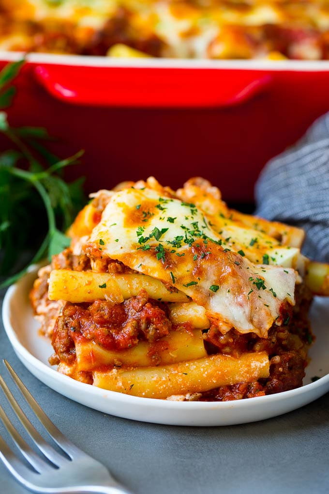

Baked Ziti

Description
This Easy Baked Ziti is a great Italian casserole recipe for feeding a crowd filled with layers of pasta, sausage, and cheese.
Ingredients
- 1 pound ziti or penne pasta
- Kosher salt
- 1 tablespoon extra virgin olive oil
- 1 pound bulk Italian sausage, ground beef, or ground pork
- 1 large onion, chopped
- 3 to 4 cloves garlic, chopped
- 1 tablespoon minced fresh rosemary or basil
- 1 tablespoon Italian seasoning
- 1/2 teaspoon red pepper flakes
- 4 cups jarred marinara or pasta sauce
- Black pepper, to taste
- 8 ounces mozzarella cheese, shredded
- 1 cup grated Parmesan or pecorino cheese
- 1 heaping cup ricotta cheese
Steps
- Preheat the oven to 350°F.
- Heat a large pot of salted water (for every 2 quarts of water, one tablespoon of salt) to a strong boil.
- Add the pasta and cook at a rolling boil, uncovered, until the pasta is al dente—edible but still a little firm to the bite.
- Drain the pasta through a colander. Toss with a little olive oil so the pasta does not stick together while you make the sauce.
- While the water is heating in the previous step, start on the sauce. Heat a tablespoon of olive oil in a large sauté pan on medium-high heat.
- When the oil is shimmering hot, add the bulk sausage or ground meat. Break up any large chunks of sausage as it cooks. Brown well.
- When the meat is mostly browned, add the onions and stir well to combine. Sauté everything until the onions are translucent and beginning to brown, about 4 to 5 minutes.
- Add the garlic, rosemary or basil, Italian seasoning, and red pepper flakes and stir to combine. Cook 1 minute, then add the tomato sauce and stir well. Bring to a simmer.
- Spread a thin layer of the sauce in the bottom of a 9x13-inch casserole pan, then dot the surface with half the ricotta cheese. Ladle a spoonful of sauce into the pasta, stir it well and then add the pasta into the casserole.
- Pour the rest of the sauce over the pasta, dot the remaining ricotta cheese over the pasta, and sprinkle on top both the mozzarella and the Parmesan cheese.
- Bake uncovered in the oven at 350°F until the top is lightly browned and the cheese melted, about 20 to 25 minutes.
- Let stand for 10 minutes before serving.
Enjoy!